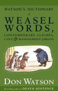

|  |
| About IR |
| Editors |
| Author instructions |
| Copyright |
| Author index |
| Subject index |
| Search |
| Reviews |
| Register |
| Home |
Watson, D. Watson's dictionary of weasel words, contemporary clichés, cant & management jargon. Milsons Point, NSW, Australia: Knopf, 2004. 357, [1] pp. ISBN 1-74051-321-5. A$32.95
Some time ago I reviewed an earlier book by Don Watson (former speech writer for Australian Prime Minister, Paul Keating) which, in Australia, had the title 'Death sentence: the decay of public language'. At least it had that title in Australia: in the UK it became, 'Gobbledygook: how cliches, sludge and management-speak are strangling our public language', while in the USA it was published as, 'Death sentences: how cliches, sludge and management-speak are strangling our public language'. Such is the confusion that Amazon.co.uk is offering the two titles as a special offer, apparently unaware that they are the same book! One wonders what the publisher is going to do with this new book. Those in the UK and the USA had better just watch out for Don Watson as author—and then check very carefully.
Why review a book like this in Information Research? Well, words are the very essence of scholarly communication and, given the extent to which management jargon proliferates in the academic world, any book that draws attention to its absurdities is worth notice. And, apart from that, I enjoy words.
What, then, is the new offering? As the title says, it is a dictionary: each word is defined, sometimes both in its normal dictionary sense, and again as a weasel word—the latter followed by quotations. For example:
calibrate 1. 'To check, adjust, or systematically standardise the graduations of a quantitative measuring instrument'Sometimes, however, no dictionary definition exists and then the clich´ definition is applied. For example:
(American Heritage Dictionary).
2. Fill in the details, correct me if I'm wrong; don't expect me to bother with all that shit, I've got a war on my hands.
'Calibrate me, Dick.' 'Dick, calibrate me if I'm wrong'.
Donald Rumsfeld to Chairman of the Joint Chiefs of Staff
global village The half of the globe that is on the phone. 'The new electronic interdependence recreates the world in the image of a global village.'And, on occasion, there is simply Watson's own definition:
Marshall McLuhan, 1962
reality check See if it works. What we call it if it doesn't.
'Reality check on our service objectives'.
International CEO Forum
As you can see, Watson has a great deal of fun with all of this and he has more in his introduction:
Weasel words are the words of the powerful, the treacherous and unfaithful, spies, assassins and thieves. Bureaucrats and ideologues love them. Tyrants cannot do without them. The Newspeak of Orwell's 1984 is an invention, but also a satire on real states such as the Soviet Union where death from starvation and abuse in slave camps was recorded by official as 'failure of the heart muscle'. Were any five words ever more melancholy that this?
Of course, I find a number of my pet hates in here‐'behaviours', when 'behaviour' is entirely acceptable; 'point of contact' ('Someone to talk to; with whom to touch base, dialogue, network, exchange notes, etc.); 'social capital' ('Society. Society rediscovered, and found to be actually necessary and actually good for business.'); but it does surprise me that he doesn't have 'gender' (Sex... but allowing many more circumlocutions.)
This is a book to dip into and to have by your word-processor, so that you can cautiously check when you think your prose may be slipping.
The author concludes (words in italic are in the Dictionary:
I hope this Dictionary proves useful in an ever-widening campaign of mockery and other forms of resistance. Translate it into a tool of derision. Migrate it to a satirical skill set. The Dictionary nurtures the subversive hope that the next edition will be smaller, and one following smaller still, until this original edition becomes a relic of a brief age when the language slipped from our grasp. But we took it back. We made de-weaseling a key competency and began to see that not only had our leaders and our institutions mugged us, we had mugged ourselves. We decided to fight back. So we could move on.
Do make sure that your zero latency is at zero and that you are not in such a time crunch that you can't actualise your need and experience the emergent learning this volume can deliver.
Professor T.D. Wilson
Editor-in-Chief
September, 2005
How to cite this review
Wilson, T.D. (2005). Review of: Watson, D. Watson's dictionary of weasel words, contemporary clichés, cant & management jargon. Milsons Point, NSW, Australia: Knopf, 2004. Information Research, 11(1), review no. R188 [Available at: http://informationr.net/ir/reviews/revs188.html]